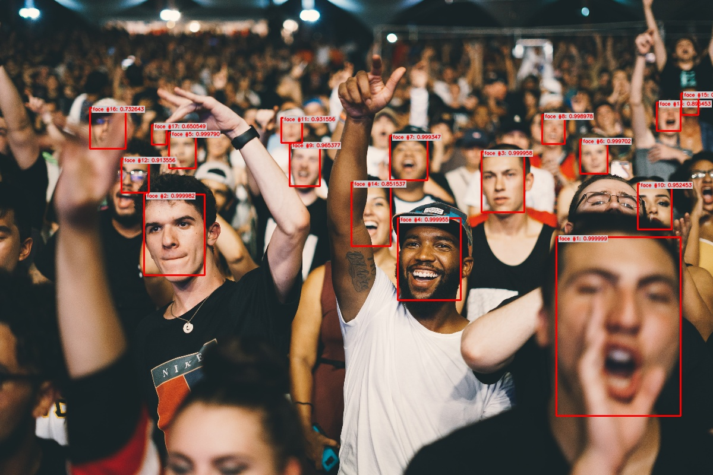

Getting Started#
Installation#
We strongly recommend uding a virtual environment. If you’re not sure where to start, we offer a tutorial here.
Installing Ikomia API#
Install Ikomia API
pip install ikomia
Warning
We only support Python 3.7, 3.8, 3.9 and 3.10 on Windows 10 and Linux.
Pre-requisites#
Open your favorite IDE (PyCharm, VS Code…) and create a new project in your virtual environment.
Then, you can just copy/paste the different examples below.
Important
If you use a notebook (Jupyter, Jupyter Lab or Google Colab), please copy/paste this code snippet for a better display of images.
from PIL import ImageShow
ImageShow.register(ImageShow.IPythonViewer(), 0)
Basic usage : workflow with 1 algorithm#
In this example, we simply use the Canny Edge Detector from OpenCV.
Workflow Structure#
Code#
Create and run your 1st workflow.
from ikomia.dataprocess.workflow import Workflow
from ikomia.utils.displayIO import display
# Init your workflow
wf = Workflow()
# Add the Canny Edge Detector
canny = wf.add_task(name="ocv_canny", auto_connect=True)
# Run on your image
# wf.run_on(path="path/to/your/image.png")
wf.run_on(url="https://raw.githubusercontent.com/Ikomia-dev/notebooks/main/examples/img/img_work.jpg")
# Inspect your results
display(canny.get_input(0).get_image())
display(canny.get_output(0).get_image())
For a step by step explanation, see here.
Results#
Source image |
Canny Edge Detector |
|---|---|
Basic usage : workflow with 1 algorithm from Ikomia HUB#
In this example, we use an algorithm from Ikomia HUB.
Just run your workflow and at runtime, it will automagically download and install all algorithms (if not already installed) on your machine.
Workflow Structure#
Code#
Create and run your workflow.
from ikomia.dataprocess.workflow import Workflow
from ikomia.utils.displayIO import display
# Init your workflow
wf = Workflow()
# Add the YOLO v7 Object Detector
yolov7 = wf.add_task(name="infer_yolo_v7", auto_connect=True)
# Run on your image
# wf.run_on(path="path/to/your/image.png")
wf.run_on(url="https://raw.githubusercontent.com/Ikomia-dev/notebooks/main/examples/img/img_work.jpg")
# Inspect your results
display(yolov7.get_input(0).get_image())
display(yolov7.get_image_with_graphics())
For a step by step explanation, see here.
Results#
Source image |
YOLO v7 Object Detector |
|---|---|
Advanced usage : workflow with 1 algorithm + custom settings#
Workflow Structure#
Code#
Adjust the algorithm parameters with our ik auto-completion mechanism …
from ikomia.dataprocess.workflow import Workflow
from ikomia.utils.displayIO import display
from ikomia.utils import ik
# Init your workflow
wf = Workflow()
# Add the Canny Edge Detector with specific parameters
canny = wf.add_task(ik.ocv_canny(threshold1="100", threshold2="200"), auto_connect=True)
# Run on your image
# wf.run_on(path="path/to/your/image.png")
wf.run_on(url="https://raw.githubusercontent.com/Ikomia-dev/notebooks/main/examples/img/img_work.jpg")
# Inspect your results
display(canny.get_input(0).get_image())
display(canny.get_output(0).get_image())
… or use a classic Dict approach
from ikomia.dataprocess.workflow import Workflow
from ikomia.utils.displayIO import display
# Init your workflow
wf = Workflow()
# Add the Canny Edge Detector
canny = wf.add_task(name="ocv_canny", auto_connect=True)
# Change Canny parameters
canny.set_parameters({
"threshold1": "100",
"threshold2": "200"
})
# Run on your image
# wf.run_on(path="path/to/your/image.png")
wf.run_on(url="https://raw.githubusercontent.com/Ikomia-dev/notebooks/main/examples/img/img_work.jpg")
# Inspect your results
display(canny.get_input(0).get_image())
display(canny.get_output(0).get_image())
For a step by step explanation, see here.
Results#
Source image |
Canny Edge Detector |
|---|---|
Advanced usage : workflow with 2 algorithms + custom settings#
Workflow Structure#
Code#
from ikomia.dataprocess.workflow import Workflow
from ikomia.utils.displayIO import display
from ikomia.utils import ik
# Init your workflow
wf = Workflow()
# Add the Kornia Face Detector
face = wf.add_task(ik.infer_face_detection_kornia(), auto_connect=True)
# Add a blur effect
blur = wf.add_task(ik.ocv_blur(kSizeWidth="61", kSizeHeight="61"), auto_connect=True)
# Run on your image
# wf.run_on(path="path/to/your/image.png")
wf.run_on(url="https://raw.githubusercontent.com/Ikomia-dev/notebooks/main/examples/img/img_people.jpg")
# Inspect your results
display(face.get_image_with_graphics())
display(blur.get_output(0).get_image())
Results#
Kornia Face Detector |
Blurred faces |
|---|---|
 |
Advanced usage : export results to JSON#
Code#
Create and run your workflow.
from ikomia.dataprocess.workflow import Workflow
from ikomia.utils import ik
# Init your workflow
wf = Workflow()
# Add the YOLO v7 Object Detector
yolov7 = wf.add_task(ik.infer_yolo_v7(), auto_connect=True)
# Run on your image
# wf.run_on(path="path/to/your/image.png")
wf.run_on(url="https://raw.githubusercontent.com/Ikomia-dev/notebooks/main/examples/img/img_work.jpg")
# Get results as JSON
results_json = yolov7.get_results().to_json(["json_format", "indented"])
print(results_json)
For a step by step explanation, see here.
Results#
{
"detections": [
{
"box": {
"height": 235.06271362304688,
"width": 286.51531982421875,
"x": 853.1284790039062,
"y": 374.7386779785156
},
"color": {
"a": 9,
"b": 50,
"g": 99,
"r": 232
},
"confidence": 0.9322412014007568,
"id": 0,
"label": "laptop"
}
]
}
Advanced usage : export workflow to JSON#
Code#
Create and export your workflow as JSON.
from ikomia.dataprocess.workflow import Workflow
from ikomia.utils import ik
# Init your workflow
wf = Workflow("My workflow")
# Add the YOLO v7 Object Detector
yolov7 = wf.add_task(ik.infer_yolo_v7(), auto_connect=True)
# Save your workflow as JSON in the current folder or specify a path
# wf.save("/path/to/my_workflow.json")
wf.save("./my_workflow.json")
Then just load and run your workflow.
from ikomia.dataprocess import workflow
from ikomia.utils import ik
from ikomia.utils.displayIO import display
# Load your workflow from the current folder or specify a path
# wf = workflow.load("/path/to/my_workflow.json")
wf = workflow.load("./my_workflow.json")
# Run on your image
# wf.run_on(path="path/to/your/image.png")
wf.run_on(url="https://raw.githubusercontent.com/Ikomia-dev/notebooks/main/examples/img/img_work.jpg")
# Find all tasks with the name 'infer_yolo_v7' in the workflow
# and store them in a list
# yolov7_list = wf.find_task("infer_yolo_v7")
yolov7_list = wf.find_task(ik.infer_yolo_v7.name())
yolov7 = yolov7_list[0]
# Inspect your results
display(yolov7.get_input(0).get_image())
display(yolov7.get_image_with_graphics())
For a step by step explanation, see here.
Results#
Source image |
YOLO v7 Object Detector |
|---|---|
Conclusion#
Congratulations! You’ve reached the end of the quickstart guide. You should now have a good understanding of how to use Ikomia API to create, customize and run workflows with various algorithms. Feel free to explore more features and create your own amazing workflows!